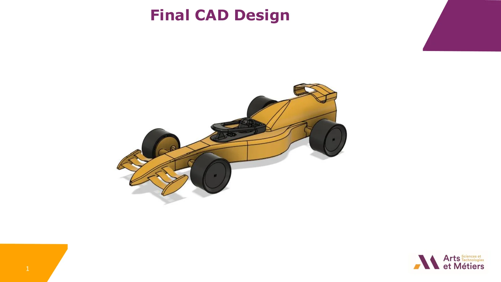

Conception et fabrication d'une mini F1 propulsée au CO2 pour un sprint de 20 m, selon la stricte réglementation 2024.
Contexte et objectif du projet
Ce projet fait partie du challenge international F1 in Schools. L'objectif est de concevoir une mini voiture de Formule 1 propulsée par une cartouche de CO2 de 8 g, usinée à partir d'un bloc modèle F1 homologué, et optimisée pour parcourir une piste droite de 20 m le plus vite possible tout en respectant les règles techniques 2024 (T1 à T10).
Objectif ingénierie : conformité stricte, performances aérodynamiques, stabilité au roulement, fabricabilité CNC et livrables professionnels.
Étude de cas PDF (EN)
Pages du portfolio
01 / 07

01 · DÉMARCHE
Une démarche de conception itérative
01Réglementation
Repérer les contraintes T1–T10 et les éléments imposés : bloc, cartouche CO₂, guides de fil et roues.
02CAO
Construire les sous-ensembles sous Fusion 360, puis affiner trois à quatre versions.
03CFD
Comparer les écoulements à 50 m/s et revoir les raccords d’ailes et la jupe latérale.
04Prototype
Imprimer en 3D uniquement certaines pièces, visibles en noir sur la photo, pour les assembler au corps léger en mousse.
05CAM / CNC
Préparer l’ébauche et la finition avec une fraise boule, puis le montage d’usinage.
06Essais
Comparer la géométrie obtenue à la CAO et observer le comportement sur piste.
Les contrôles réglementaires accompagnent chaque étape. Les résultats CFD et les défauts observés sur le prototype ramènent à la CAO avant la préparation d’usinage.
02 · ITÉRATIONS ET LIVRABLES
Des décisions appuyées sur des observations
Conception et communicationLa CAO, les plans cotés et les rendus documentent les choix de géométrie et d’intégration.Analyse aérodynamiqueLes champs de pression, de vitesse et de frottement guident les ajustements. La tige de l’aileron avant perturbe l’écoulement à l’entrée.Fabrication et assemblageLe corps de la voiture a été usiné dans la mousse pour limiter sa masse. Seules certaines pièces, visibles en noir sur la photo, ont été imprimées en 3D, puis assemblées au corps usiné.Préparation de l’usinageUn montage dédié permet la rotation de la pièce. Un décalage angulaire lié à l’origine d’usinage rappelle l’importance de la mise à zéro ; l’usinage restait en cours à la date du rapport.
Journée d'essai
En théorie, tout s'arrête parfaitement. En pratique, on rencontre parfois la caméra.